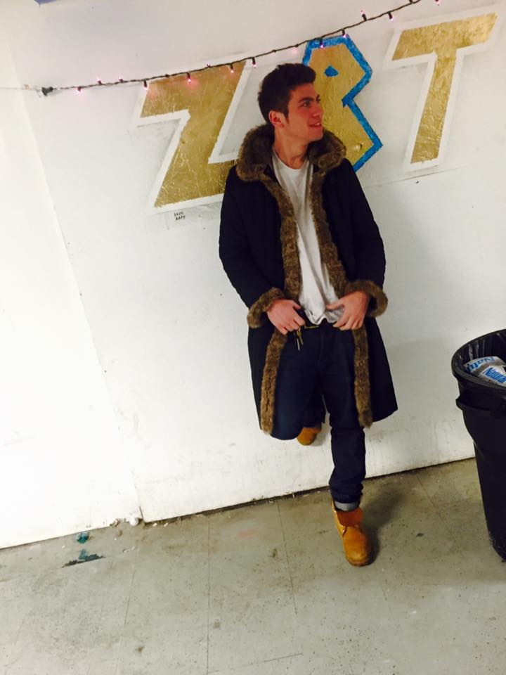

Jacob Frank
Founder
Growing up as an angsty teen in Brookyln, New York, Jacob became obsessed with music at a young age. He felt that is was annoying switching between so many different music services, especially because there were so many premium prices to pay each month. As a computer science student at Washington University in St. Louis, Jacob thought that he would put his knowledge to the test and make DatStream, a great place for all of your music!
Reese Wills
Founder
Music has always been a powerful way to empathize with other people around the globe. As a young soundcloud rapper, Reese fell in love with music when he realized how many of his fans felt the same way that he did about many things. But, there was one thing getting in the way of Lil' Reese getting famous - the competetive nature of the numerous streaming services for music! This is why Reese founded DatStream with Jacob, to make sure that anyone who wanted to listen to his music has the opportunity to!